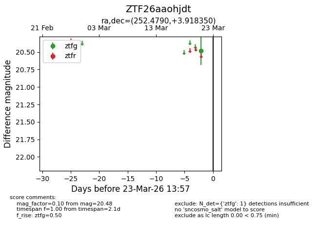
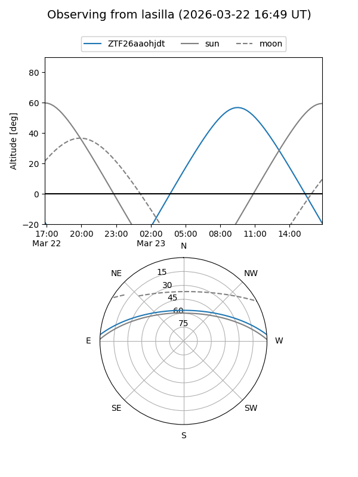
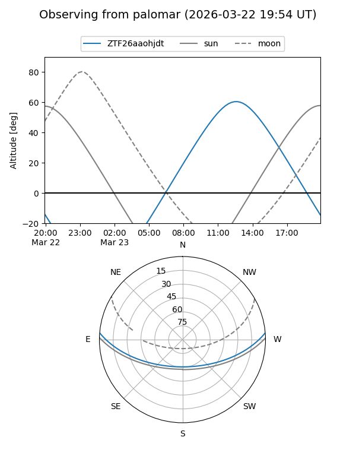

ZTF26aaohjdt
Target ZTF26aaohjdt at 2026-03-23 13:59
Aliases and brokers:
FINK: link
Lasair: link
ALeRCE: link
alt names
ZTF26aaohjdt (ztf,fink_ztf)
Coordinates:
equatorial (ra, dec) = 252.4790,+3.91835
equatorial (HMS+DMS) = 16:49:54.95,+03:55:06.06
galactic (l, b) = (21.8065,+28.69915)
Flags:
Photometry:
last ztfg=20.48
1 ztfg detections
Lightcurve

Visibility


Additional plots